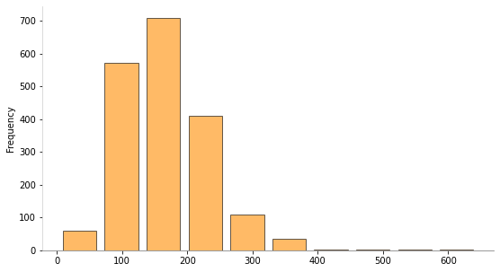
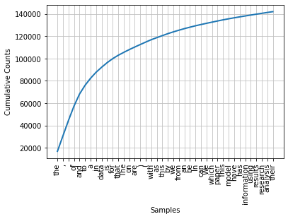

Operaciones básicas sobre texto usando NLTK¶
30 min | Última modificación: Noviembre 29, 2020
[1]:
import nltk
nltk.download("stopwords")
nltk.download("punkt")
[nltk_data] Downloading package stopwords to /root/nltk_data...
[nltk_data] Unzipping corpora/stopwords.zip.
[nltk_data] Downloading package punkt to /root/nltk_data...
[nltk_data] Unzipping tokenizers/punkt.zip.
[1]:
True
[2]:
##
## Preparacion de los datos
##
import pandas as pd
data = pd.read_csv(
"https://raw.githubusercontent.com/jdvelasq/datalabs/master/datasets/scopus-abstracts.csv",
sep=",",
thousands=None,
decimal=".",
encoding="utf-8",
)
data.columns
[2]:
Index(['DOI', 'Link', 'Abstract'], dtype='object')
[3]:
##
## Numero de registros
##
len(data)
[3]:
1902
[4]:
##
## Ejemplo de un abstract
##
data.Abstract[0]
[4]:
'Mobility is one of the fundamental requirements of human life with significant societal impacts including productivity, economy, social wellbeing, adaptation to a changing climate, and so on. Although human movements follow specific patterns during normal periods, there are limited studies on how such patterns change due to extreme events. To quantify the impacts of an extreme event to human movements, we introduce the concept of mobility resilience which is defined as the ability of a mobility system to manage shocks and return to a steady state in response to an extreme event. We present a method to detect extreme events from geo-located movement data and to measure mobility resilience and transient loss of resilience due to those events. Applying this method, we measure resilience metrics from geo-located social media data for multiple types of disasters occurred all over the world. Quantifying mobility resilience may help us to assess the higher-order socio-economic impacts of extreme events and guide policies towards developing resilient infrastructures as well as a nation’s overall disaster resilience strategies. © 2019, The Author(s).'
[5]:
##
## Algunos abstracts tienen la marca de copyright + año + 'The Author(s).'
## Se remueve
##
data["Abstract"] = data.Abstract.map(
lambda w: w[0 : w.find("\u00a9")], na_action="ignore"
)
data.Abstract[0]
[5]:
'Mobility is one of the fundamental requirements of human life with significant societal impacts including productivity, economy, social wellbeing, adaptation to a changing climate, and so on. Although human movements follow specific patterns during normal periods, there are limited studies on how such patterns change due to extreme events. To quantify the impacts of an extreme event to human movements, we introduce the concept of mobility resilience which is defined as the ability of a mobility system to manage shocks and return to a steady state in response to an extreme event. We present a method to detect extreme events from geo-located movement data and to measure mobility resilience and transient loss of resilience due to those events. Applying this method, we measure resilience metrics from geo-located social media data for multiple types of disasters occurred all over the world. Quantifying mobility resilience may help us to assess the higher-order socio-economic impacts of extreme events and guide policies towards developing resilient infrastructures as well as a nation’s overall disaster resilience strategies. '
[6]:
##
## Longitud de los abstracts en caracteres
## Colores diponibles en matplotlib: https://matplotlib.org/3.1.0/gallery/color/named_colors.html
##
import matplotlib.pyplot as plt
data.Abstract.map(lambda w: len(w), na_action="ignore").plot.hist(
color="darkorange", alpha=0.6, rwidth=0.8, edgecolor="k", figsize=(9, 5)
)
plt.gca().spines["left"].set_color("lightgray")
plt.gca().spines["bottom"].set_color("gray")
plt.gca().spines["top"].set_visible(False)
plt.gca().spines["right"].set_visible(False)

[7]:
##
## Longitud de los abstracts en palabras
##
data.Abstract.map(lambda w: len(w.split()), na_action="ignore").plot.hist(
color="darkorange", alpha=0.6, rwidth=0.8, edgecolor="k", figsize=(9, 5)
)
plt.Figure(figsize=(8, 4))
plt.gca().spines["left"].set_color("lightgray")
plt.gca().spines["bottom"].set_color("gray")
plt.gca().spines["top"].set_visible(False)
plt.gca().spines["right"].set_visible(False)

[8]:
##
## Busqueda de abstracts con una cadena en particular
##
data.Abstract[data.Abstract.map(lambda w: "mobility" in w.lower(), na_action="ignore")]
[8]:
0 Mobility is one of the fundamental requirement...
10 The tendency of people to form socially cohesi...
54 In recent years, mobility data from smart card...
95 The influence of urban design on economic vita...
111 This study demonstrates the use of mobile phon...
188 Customer profiles that include gender and age ...
209 To measure job accessibility, person-based app...
235 In this research, we exploit repeated parts in...
236 Tourist flows in historical cities are continu...
239 It is well reported that long commutes have a ...
242 Nowadays, Location-Based Social Networks (LBSN...
244 In the last decades, the notion that cities ar...
251 In Latin America, shopping malls seem to offer...
253 Traditional crime prediction models based on c...
255 Human mobility always had a great influence on...
257 In this paper, we follow the short-ranged Syri...
262 Epidemic outbreaks are an important healthcare...
263 Billions of users of mobile phones, social med...
265 A multi-modal transportation system of a city ...
266 Estimating revenue and business demand of a ne...
275 Predictive models for human mobility have impo...
582 Understanding and modeling the mobility of ind...
587 Pokémon Go, a location-based game that uses au...
597 Next place prediction algorithms are invaluabl...
666 Walking is a form of active transportation wit...
845 China’s economic reforms of 1978, which led to...
865 Big data is among the most promising research ...
870 Predicting human mobility flows at different s...
886 Tourism is becoming a significant contributor ...
891 Whenever someone makes or receives a call on a...
894 The exploration of people’s everyday life has ...
946 Cloud storage services have become ubiquitous....
1056 In recent years, we have seen scientists attem...
1061 One of the greatest concerns related to the po...
1065 Transportation planning is strongly influenced...
1066 Customers mobility is dependent on the sophist...
1102 The wealth of information provided by real-tim...
1134 Geospatial big data refers to spatial data set...
1164 The consumerization of information technology ...
1167 Human mobility in a city represents a fascinat...
1169 There is an increasing trend of people leaving...
1300 The newly released Orange D4D mobile phone dat...
1325 This study leverages mobile phone data to anal...
1580 The mobile cellular systems are expected to su...
1625 In the age of mobile computing where users can...
Name: Abstract, dtype: object
[9]:
##
## word tokenizer
## Separación de las frases en palabras
##
from nltk.tokenize import word_tokenize
tokens = data.Abstract.map(word_tokenize)
# primeros 20 tokens del primer abstract
tokens[0][:20]
[9]:
['Mobility',
'is',
'one',
'of',
'the',
'fundamental',
'requirements',
'of',
'human',
'life',
'with',
'significant',
'societal',
'impacts',
'including',
'productivity',
',',
'economy',
',',
'social']
[10]:
##
## Concordancias
## Muestra las palabras en el contexto de una frase
##
abstracts = data.Abstract.copy()
abstracts = abstracts.dropna()
abstracts = abstracts.map(lambda w: w.strip())
abstracts = abstracts.map(lambda w: w + "." if w[-1] != "." else w)
abstracts = abstracts.tolist()
abstracts = " ".join(abstracts)
abstracts = word_tokenize(abstracts)
abstracts = nltk.Text(abstracts)
abstracts.concordance("human")
Displaying 25 of 230 matches:
human life with significant societal impac
nging climate , and so on . Although human movements follow specific patterns d
y the impacts of an extreme event to human movements , we introduce the concept
-scale online aggregators of offline human biases ? Often portrayed as easy-to-
e seek alternative features based on human behavior that might explain part of
ctivity of individual investors . In human relations individuals ’ gender and a
ed caller and callee combinations of human interactions , namely male to male ,
endship give rise to a wide scope of human sociality . Here we analyse the rela
ts represent a new view of worldwide human behavior and a new application of ma
owever , this task relies heavily on human observers in the affected locations
utomating this process , the risk of human error is also eliminated . Compared
data . AI is taking over the job ’ s human do , receptionists , drivers , chefs
he rights and ethics of AI ” ? . The human race is on an inevitable path of AI
proposed method reduces the need for human work and makes it easy to intelligen
produce big data streams can require human operators to monitor these event str
al environmental pollution caused by human activities has become a threat to pu
ata mining were mainly attributed to human bias and shortcomings of the law ; t
data in order to analyze and predict human behavior . Over the last decade , si
re needed to interactively integrate human cognitive sensemaking activity with
computational model that mirrors the human sensemaking process , and consists o
g semantic interaction such that the human 's spatial synthesis actions are tra
at reflecting urban developments and human mobility ) to look at the impact of
configurational variables to explain human spatial behavior and spatial cogniti
a common feature of many developing human societies . In many cases , past and
be used on a large scale to speed up human development processes in cities thro
[11]:
##
## Palabras usadas de forma similar en los mismos contextos
##
abstracts.similar("impacts")
impact most effect effects data influence characteristics levels
mobility one and patterns system field results factors dynamics
outcomes accuracy features
[12]:
##
## Contextos comunes
##
abstracts.common_contexts(["human", "interaction"])
and_networks
[13]:
##
## Conteo de palabras
##
len(abstracts)
[13]:
348451
[14]:
##
## Vocabulario
##
sorted(set(abstracts))[:30]
[14]:
['!',
'#',
'$',
'%',
'&',
"'",
"''",
"'3DStock",
"'Berlin",
"'Big",
"'Communities",
"'Data",
"'E-consultant",
"'Engineering",
"'European",
"'HorVertical",
"'JAMSTEC",
"'Prime-Example",
"'Research",
"'Researcher",
"'Spintronics",
"'Tamburi",
"'Virtual",
"'age",
"'analytical",
"'big",
"'data",
"'engine",
"'four",
"'fuzzy"]
[15]:
##
## Vocabulario único
##
len(sorted(set(abstracts)))
[15]:
19978
[16]:
##
## Ocurrencia de una palabra
##
abstracts.count("human")
[16]:
213
[17]:
##
## Indexación de palabras
##
abstracts[98]
[17]:
'extreme'
[18]:
abstracts[98:110]
[18]:
['extreme',
'event',
'.',
'We',
'present',
'a',
'method',
'to',
'detect',
'extreme',
'events',
'from']
[19]:
abstracts.index("extreme")
[19]:
53
[20]:
##
## Cómputo de la frecuencia de palabras
##
from nltk import FreqDist
fd = FreqDist(abstracts)
fd
[20]:
FreqDist({'the': 16783, ',': 13912, '.': 13814, 'of': 12884, 'and': 10793, 'to': 7812, 'a': 6364, 'in': 5374, 'data': 4468, 'is': 4107, ...})
[21]:
fd.most_common(20)
[21]:
[('the', 16783),
(',', 13912),
('.', 13814),
('of', 12884),
('and', 10793),
('to', 7812),
('a', 6364),
('in', 5374),
('data', 4468),
('is', 4107),
('for', 3622),
('that', 3008),
('The', 2605),
('on', 2508),
('are', 2320),
(')', 2245),
('(', 2217),
('with', 2149),
('as', 1828),
('this', 1794)]
[22]:
fd.plot(40, cumulative=True)

[23]:
##
## Collocations
## Textos que tienden a aparecer juntos
##
abstracts.collocations()
big data; Big Data; machine learning; social media; time series;
results show; data mining; case study; supply chain; data sets;
decision making; paper presents; mobile phone; United States; paper
proposes; land use; association rules; experimental results; social
networks; recent years
[24]:
##
## Se remueven todas las palabras que no esten
## compuestas por letras
##
import re
words = [re.sub(r"[^A-Za-z]", "", w) for w in abstracts]
words = [w for w in words if w != ""]
words[:6]
[24]:
['Mobility', 'is', 'one', 'of', 'the', 'fundamental']
[25]:
##
## Se transforman las palabras minusculas
##
words = [w.lower() for w in words]
words[:6]
[25]:
['mobility', 'is', 'one', 'of', 'the', 'fundamental']
[26]:
##
## Conteo de palabras
## Ver https://docs.python.org/3/library/collections.html
##
from collections import Counter
counter = Counter(words)
counter.most_common(10)
[26]:
[('the', 19388),
('of', 12891),
('and', 10808),
('to', 8065),
('a', 6699),
('in', 6627),
('data', 4946),
('is', 4126),
('for', 3758),
('that', 3017)]
[27]:
##
## Remoción de stopwords
## pip3 install nltk
## nltk.download('stopwords')
##
STOPWORDS = nltk.corpus.stopwords.words("english")
words = [w for w in words if w not in STOPWORDS]
counter = Counter(words)
counter.most_common(10)
[27]:
[('data', 4946),
('paper', 1041),
('model', 951),
('using', 920),
('information', 907),
('research', 831),
('results', 827),
('analysis', 806),
('based', 732),
('used', 730)]
Ejercicio¶
Para el siguiente texto:
Calcule cuántas palabras únicas tiene el texto.
Calcule cuántas frases tiene el texto.
¿Cúales son las diez palabras más frecuentes?
¿Cuantas palabras terminan en
ing?
[28]:
texto = """
Analytics is the discovery, interpretation, and communication of meaningful patterns
in data. Especially valuable in areas rich with recorded information, analytics relies
on the simultaneous application of statistics, computer programming and operations research
to quantify performance.
Organizations may apply analytics to business data to describe, predict, and improve business
performance. Specifically, areas within analytics include predictive analytics, prescriptive
analytics, enterprise decision management, descriptive analytics, cognitive analytics, Big
Data Analytics, retail analytics, store assortment and stock-keeping unit optimization,
marketing optimization and marketing mix modeling, web analytics, call analytics, speech
analytics, sales force sizing and optimization, price and promotion modeling, predictive
science, credit risk analysis, and fraud analytics. Since analytics can require extensive
computation (see big data), the algorithms and software used for analytics harness the most
current methods in computer science, statistics, and mathematics.
The field of data analysis. Analytics often involves studying past historical data to
research potential trends, to analyze the effects of certain decisions or events, or to
evaluate the performance of a given tool or scenario. The goal of analytics is to improve
the business by gaining knowledge which can be used to make improvements or changes.
Data analytics (DA) is the process of examining data sets in order to draw conclusions
about the information they contain, increasingly with the aid of specialized systems
and software. Data analytics technologies and techniques are widely used in commercial
industries to enable organizations to make more-informed business decisions and by
scientists and researchers to verify or disprove scientific models, theories and
hypotheses.
"""